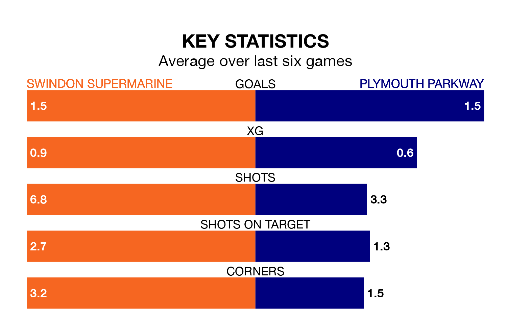

Plymouth Parkway travel to Swindon Supermarine on Saturday in the Southern League Premier South.
The visitors come into the game on the back of a defeat in their last match, having lost to Basingstoke Town 1-0 away.
Swindon Supermarine, meanwhile, drew their last match, 2-2 against Tiverton Town.
Plymouth Parkway are 19th in the table after 24 games, of which they have won eight and drawn seven, earning 31 points.
Swindon Supermarine are two places ahead of the visitors in 17th, with nine wins and eight draws putting them on 35 points.
With 39 goals in 24 games so far this season, Plymouth Parkway are the league's third-lowest scorers with 1.6 goals per game. But they are conceding fewer than average too, letting in 34 goals at a rate of 1.4 per game.
The home side, meanwhile, are average scorers, with 1.7 goals per game. They have conceded 2.4 goals per game.
Swindon Supermarine are in disappointing form in the Southern League Premier South, with one win and three draws from their last six games.
With two wins and two draws over that period, Plymouth Parkway's form is slightly better – they have taken eight points from 18, compared to Swindon Supermarine's six.
Over the last two years, Swindon Supermarine and Plymouth Parkway have played each other twice. They won one each.
Their last meeting was on April 5, when Swindon Supermarine won 3-0 at home.
Updated: 09:34 (UTC), 08/03/24